Imagens Utilizadas no Site
Aqui está o porquê de cada imagem escolhida em cada seção do site.
Página Inicial
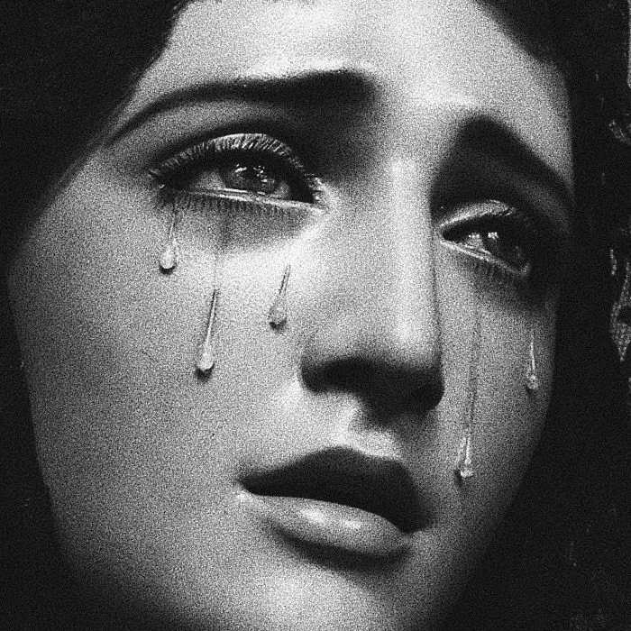
Imagem conceitual reflexiva usada na abertura da página inicial, ao lado das frases digitadas.
Rotina

Personagem Rock Lee expressando cansaço extremo, como alusão ao esgotamento da rotina.
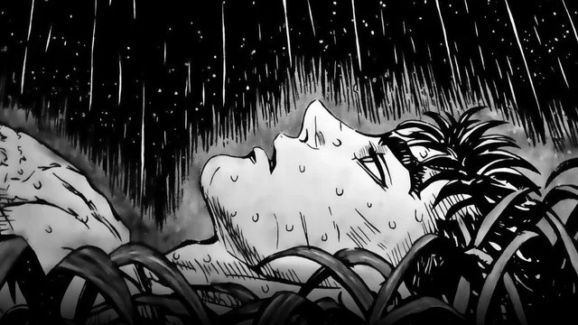
Imagem de chuva simbolizando as pequenas vitórias em meio a dias difíceis.
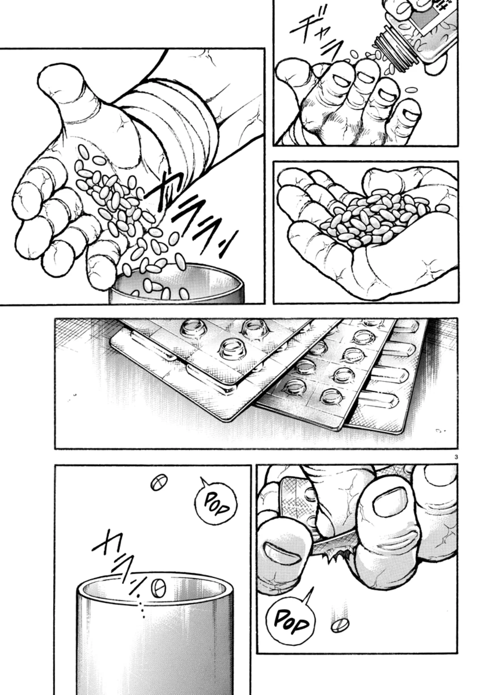
Frascos de remédio, ilustrando o card sobre enfrentar o cansaço no dia a dia.
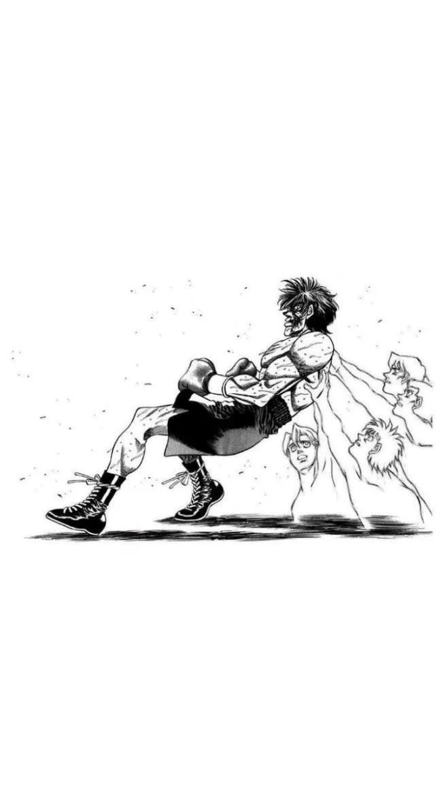
Imagem que remete a recomeçar, usada no card "Todo dia é um renascer".
Ansiedade
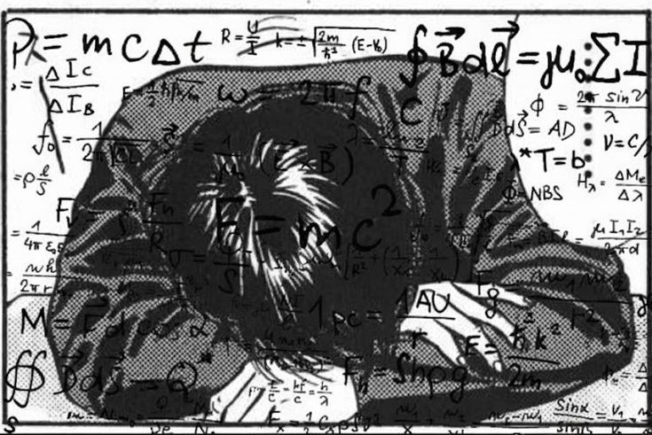
Representa a pressão dos estudos e do desempenho acadêmico sobre os jovens.
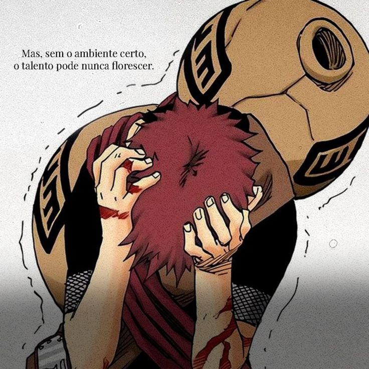
Ilustra a sensação de isolamento por trás da comparação constante nas redes sociais.
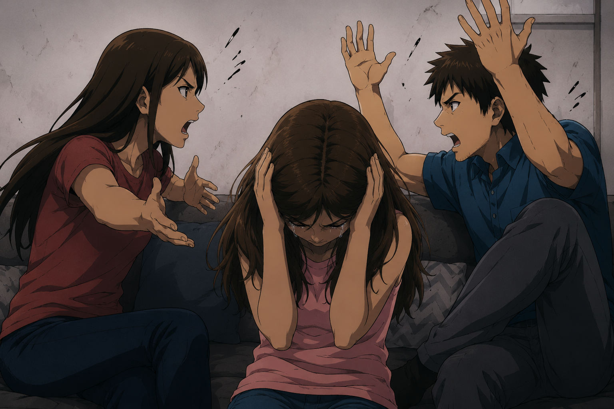
Representa os conflitos familiares como fonte de ansiedade.
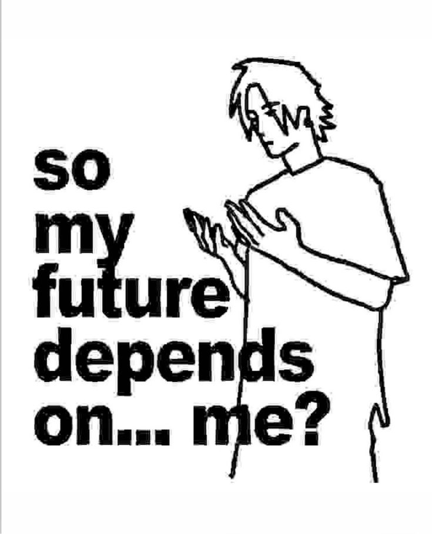
Simboliza a incerteza e o peso de pensar no futuro.
Vícios
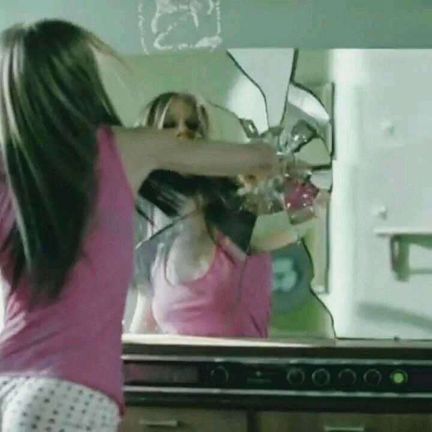
Representa o hábito de beber como forma de desestressar depois do trabalho.
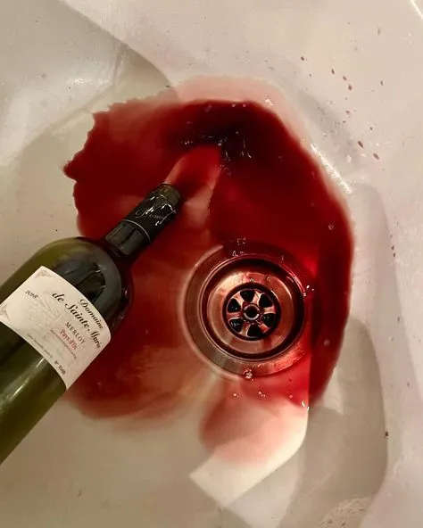
Ilustra o uso do álcool como forma de amortecer a dor emocional.
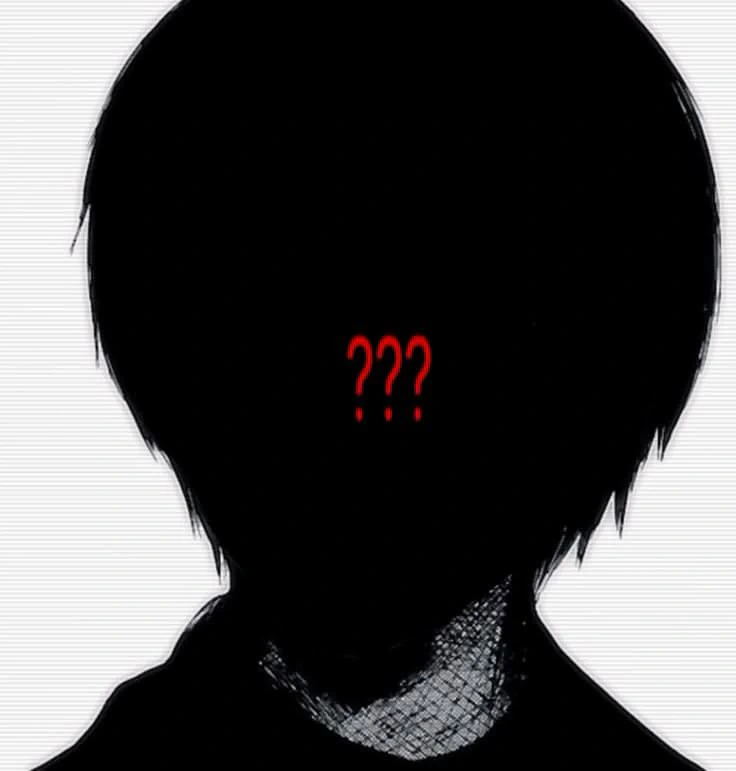
Representa a bebida como forma de se sentir parte de um grupo.
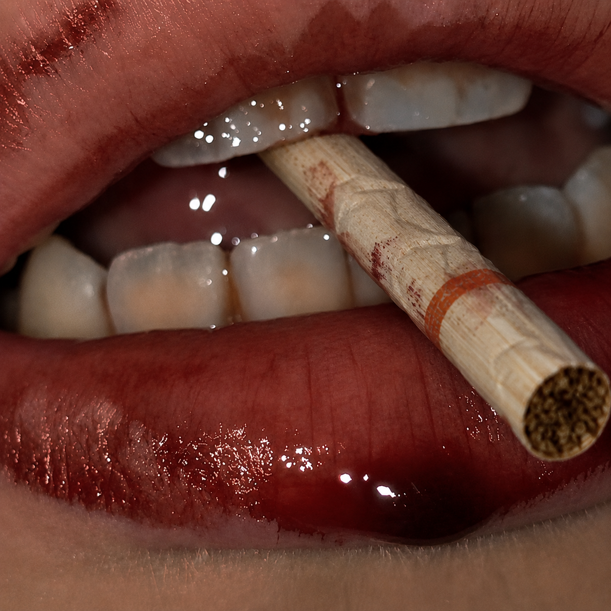
Cigarro de palha, o mais agressivo entre os três tipos apresentados na página.

Cigarro de filtro, a versão industrializada mais comum.
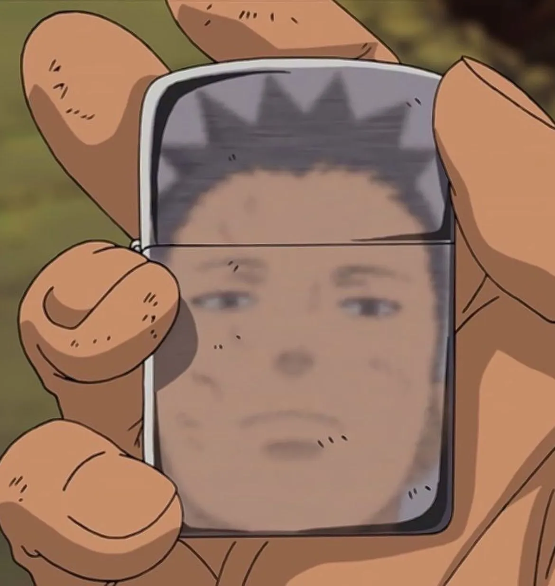
Cigarro eletrônico (vape), a versão mais recente e popular entre os jovens.